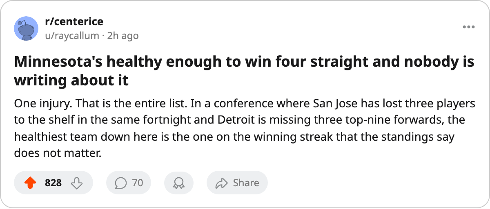

Numbers Game: Minnesota has won 4 straight and has 1 injured player on the entire roster
The Wild are 12th in the Western Conference, 11 points back of the 8th place, and playing the best hockey of their season.
 Ray CallumSenior correspondent · Home Ice Network
Ray CallumSenior correspondent · Home Ice Network
 Minnesota Wild have won four straight. The streak began before March 20 and the most recent entry is a 2-0 shutout of
Minnesota Wild have won four straight. The streak began before March 20 and the most recent entry is a 2-0 shutout of  Detroit Red Wings on March 23, a game where Detroit managed 16 shots against
Detroit Red Wings on March 23, a game where Detroit managed 16 shots against  Manny Fernandez88. Minnesota's last 10 games read: 8 wins, 1 regulation loss, 1 regulation loss. The goal differential across that span is +7, with 28 scored and 21 allowed.
Manny Fernandez88. Minnesota's last 10 games read: 8 wins, 1 regulation loss, 1 regulation loss. The goal differential across that span is +7, with 28 scored and 21 allowed.
They are 12th in the Western Conference with 71 points, 7 games left, and a ceiling of 85. The 8th-place club is Phoenix at 82, with 8 games remaining and a 4-game winning streak of their own. The arithmetic is not close. Minnesota is playing for seed pride and a draft position that will be the same whether they win 7 more or 2.
Minnesota has one player on the injured list:  Donald Audette75, wrist, return March 29. The rest of the Western Conference's bottom half has been gutted. San Jose is missing
Donald Audette75, wrist, return March 29. The rest of the Western Conference's bottom half has been gutted. San Jose is missing  Patrick Marleau88 and Marcel Hossa76 and Lynn Loyns75. Chicago has 1 on the shelf but has lost 7 of their last 9. Minnesota has been the healthiest team in the division for three weeks.
Patrick Marleau88 and Marcel Hossa76 and Lynn Loyns75. Chicago has 1 on the shelf but has lost 7 of their last 9. Minnesota has been the healthiest team in the division for three weeks.
Manny Fernandez has played 64 of 75 games, 85 percent of the workload. He is one of 4 goaltenders in this league above 84 percent share. That volume keeps Minnesota in this position, and it is wearing down everyone they play.
The rest of the week
Minnesota plays Detroit Red Wings at home on March 25 (first meeting after the March 23 road shutout), then  San Jose Sharks,
San Jose Sharks,  Chicago Blackhawks, and
Chicago Blackhawks, and  Calgary Flames over the next six days. Detroit will be without
Calgary Flames over the next six days. Detroit will be without  Brendan Shanahan81 (ankle, out until April 30) and
Brendan Shanahan81 (ankle, out until April 30) and  Tomas Holmstrom68 (concussion, out until May 3) and
Tomas Holmstrom68 (concussion, out until May 3) and  Ray Whitney72 (arm, out until March 30). Three top-nine forwards, gone.
Ray Whitney72 (arm, out until March 30). Three top-nine forwards, gone.
The Wild will not make the playoffs. Nobody in this building needs the calendar to tell them that. But a 4-game winning streak against this level of attrition, with a road shutout in the middle of it, shapes how a coach looks at a roster in April and what that roster does in August.
Minnesota's 7 remaining games: 2 against Detroit, 1 against San Jose, 1 against Chicago, 1 against Calgary. The first of those is tonight.
